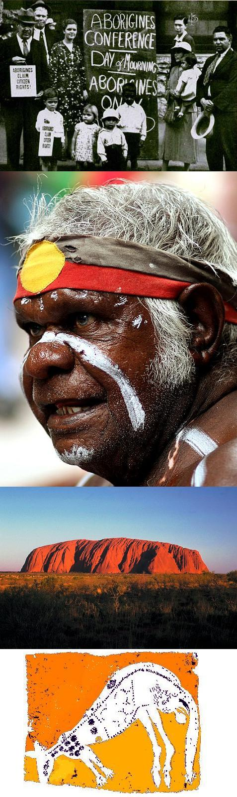

Το 1788 έφτασαν στην Αυστραλία οι πρώτοι στρατιώτες συνοδεύοντας εκατοντάδες κατάδικους της Βρετανικής μεγαλειότητας, μετά την ‘’επίσημη’’ ανακάλυψη της χώρας το 1777.
Φτάνοντας, έστειλαν μήνυμα, ότι η χώρα κατοικούνταν από ‘’μια μορφή μαύρων ανθρώπων’’.
Αυτή η μη αναγνωρίσιμη από τους λευκούς φυλή, ήταν οι Αβοριγίνες (Aborigines), με μια καταγραμμένη μέσα από την τέχνη τους ιστορία, 60000 ετών!
Αυτό που ακολούθησε, ήταν η μαζική σφαγή από τους νεοφερμένους αστυνομικούς, φυλακισμένους, στρατιώτες και βέβαια τους μεγαλέμπορους που πήγαν από κοντά για νέα κέρδη και είδαν ότι οι ‘’άγριοι’’ είχαν τα καλύτερα αγροτεμάχια.
Οι περισσότεροι δολοφονήθηκαν σε σπορ επιδρομές για την γυμναστική των προνομιούχων που τους πυροβολούσαν ανάμεσα από το κυνήγι των emu και των καγκουρό (kangaroo). Αυτό το μακελειό συνεχίστηκε με τη βούλα του κράτους μέχρι το 1850. Από εκεί και πέρα βέβαια δεν σταμάτησε, απλά γινόταν περισσότερο σιωπηλά.
Ο λευκός κατακτητής, μεγαλώνοντας όλο και περισσότερο την περιουσία του, ενοχλούνταν από την παρουσία των Aborigine και βρήκε άλλους τρόπους να τους πάρει τη γη.
Οινόπνευμα.
Το τραγικό είναι, ότι οι δολοφόνοι τους περπατούσαν ελεύθεροι και οι ίδιοι μπήκαν και μπαίνουν ακόμα στις φυλακές για μέθη!
Οι γέροντες των φυλών ζήτησαν να τιμωρούν οι ίδιοι τους μεθυσμένους παράνομους με το δικό τους τρόπο. Να μη χωρίζονται από τις οικογένειές τους. Πρότειναν λοιπόν να τους οδηγούν σε περιοχές χιλιόμετρα μακριά από οποιοδήποτε πολιτισμό και να τους αφήνουν κάτω από κάποιο δέντρο να ξεμεθύσουν και μετά να επιστρέψουν στη φυλή τους με τα πόδια.
Δεν το δέχτηκαν βέβαια αυτό και εφάρμοσαν ένα νέο νόμο που έλεγε πως 6 μήνες φυλακή ήταν ότι έπρεπε για μια βραδιά μέθης.
Είναι περιττό να πούμε πως οι Aborigines δεν είχαν κανένα δικαίωμα στη γη τους.
Το ανώτατο δικαστήριο εφάρμοσε πιστά ένα νόμο που έλεγε ότι δεν τους ανήκει η γη εκτός και αν ζουν εκεί μερικές δεκάδες χρόνια. Πράγμα αδύνατο, γιατί οι Aborigines έβρισκαν και ζούσαν κοντά σε νερόλακκους (billabongs), οι οποίοι στέρευαν όσο ξαφνικά εμφανιζόντουσαν.
Το μεγαλύτερο έγκλημα κατά των Αβοριγίνων, ξεκίνησε το 1869 και τελείωσε το 1969. (τότε που μαθεύτηκε δηλαδή).
Ονομάζεται Stolen Generations (κλεμμένες γενεές).
Η κυβέρνηση της Αυστραλίας, είδε ως σωστό, να απομακρύνει τα παιδιά με την βοήθεια διαφόρων εκκλησιαστικών αρχών για να τους προσφέρει καλύτερη ζωή.
Η υπόσχεση ήταν, ότι θα τα φρόντιζαν σε ορφανοτροφεία και κρατικά ιδρύματα και θα τα σπούδαζαν και θα είχαν όλα τα καλά του κόσμου και μεγαλωμένα κάτω από τη ‘’σωστή’’ καθοδήγηση του λευκού πολύξερου, θα επέστρεφαν και θα φρόντιζαν ως γιατροί, δικηγόροι και λογιστές, τις ανάγκες των φυλών στη σύγχρονη κοινωνία.
Το 1999, μαθεύτηκε ότι όλα αυτά τα χρόνια ‘’εκπολιτίστηκαν’’ μερικές εκατοντάδες χιλιάδες παιδιά των Aborigine ως υπηρετικό προσωπικό, εκδιδόμενο προσωπικό και προσωπικό σε φάρμες και εργοστάσια.
Από το σύνολο των κλεμμένων γενεών, μόλις 350 κατέφεραν να πάνε σχολείο και αυτό όχι για κανένα άλλο λόγο, αλλά τα αφεντικά τους δεν μπορούσαν να συνεννοηθούν και αναγκάστηκαν να τα στείλουν σε κάποιο σχολείο.
Με την βοήθεια της τεχνολογίας, οργανώθηκαν ομάδες λευκών και Αβοριγίνων και εντόπισαν αρκετά (όμως λίγα) από τα κλεμμένα και με αυτό τρόπο τα επανέθεσαν με τις οικογένειες τους και οι τελευταίες κυβερνήσεις της χώρας αναγκάστηκαν να ομολογήσουν το γεγονός. Αλλά, όπως η αμφισβήτηση των ενόχων για το ολοκαύτωμα των Εβραίων, έτσι και εδώ, κάποιοι διατηρούν αμφιβολίες για το αν πράγματι έγινε αυτό που έγινε.
Η γη των Αβοριγίνων, είναι πλούσια. Πλούσια σε χρυσό, οπάλια, διαμάντια και ουράνιο.
Λογικό λοιπόν, οι λευκοί καρχαρίες, οι οποίοι αφθονούν σε θάλασσα και στεριά, να τα θέλουν όλα αυτά και μάλιστα…τζάμπα.
Έτσι, κατασκεύασαν στοιχειωδώς ανθρώπινους καταυλισμούς και τους μάντρωσαν εκεί μέχρι να εξορύξουν ότι μπορούσαν.
Το μεγαλύτερο μυστήριο για τα κλεφτρόνια ήταν το Ayers Rock. Uluru για τους Aborigines.
Είναι ο μεγαλύτερος μονόλιθος του πλανήτη. Θεωρείται σήμερα ως σημείο συνάντησης ενός από τους αρχαιότερους καταγραμμένους πολιτισμούς της ανθρωπότητας…των Αβοριγίνων.
Έχει ύψος 345μ, μήκος 3.6χλμ και πλάτος 2χλμ. Μετρήσεις έδειξαν ότι έχει αρκετά χιλιόμετρα ακόμα κάτω από το έδαφος. Πρώτη φορά το είδαν λευκοί το 1873 και του έδωσαν το όνομα ενός λευκού Sir…του Henry Ayers και αφού το 1985 είδαν ότι δεν είχε κάποιο κέρδος, το επέστρεψαν στους νόμους κατόχους του, τη φυλή των Pitjantjatjara.
Η σωστή ονομασία του, είναι Uluru. Πρόσφατα, σε μια από τις χιλιάδες εσοχές που δημιουργεί η διάβρωση με το νερό της βροχής, βρέθηκαν λιθογραφίες (τοιχογραφίες) Αβοριγίνων ηλικίας δεκάδων χιλιάδων ετών. Ακόμη μια απόδειξη από τις αμέτρητες, ότι αυτή η γη τους ανήκει. Αλλά, who cares?
Τι τα θες…από ένα μαλάκα λευκό κατακτητή και καταπατητή, που μόλις το 1948 αναγνώρισε τους Aborigines ως Αυστραλούς…όχι για τους λόγους που όλοι γνωρίζουμε, αλλά όπως επίσημα καταγράφηκε, επειδή γεννήθηκαν στην Αυστραλία!!!!!!!!!!!!!!!
[download mp3: didgeridoo] |